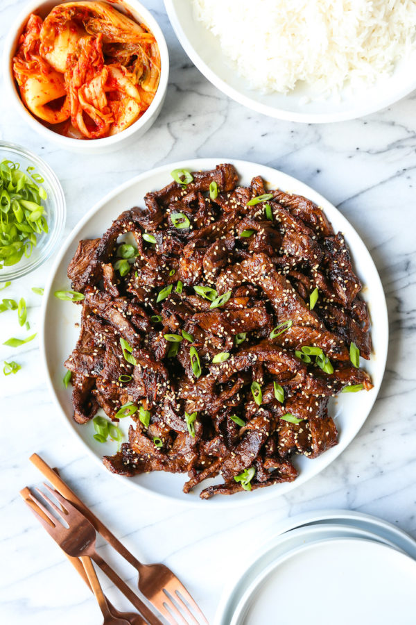

Bulgogi Recipe

Description
In this recipe, we’re using it to prepare a version of bulgogi, one of the most popular dishes in Korean cuisine, both in restaurants and in homes. Typically prepared with fancier cuts of beef, bulgogi rests in a mild, balanced marinade for hours (ideally overnight) before getting crispy and caramelized on the grill. This recipe delivers all that flavor on a hamburger budget. Sweet and salty, it’s a flexible base that can be served with lettuce wraps, rice, noodles, or rolled up into homemade Kimbap.
Ingredients
- 1 pound ground beef
- 1/2 medium yellow onion, sliced
- 2 cloves garlic
- 2 scallions, trimmed and cut into 1-inch pieces (white and light green parts)
- 1 tablespoon soy sauce
- 1 tablespoon sesame oil
- 1 teaspoon kosher salt
- 1 tablespoon maple syrup
- 1 teaspoon vegetable oil
Instructions
- Combine all ingredients except vegetable oil in a bowl and mix together well. Allow the beef to marinate, covered in the refrigerator, for a minimum of 4 hours, ideally overnight.
- The next day, heat the vegetable oil in a large sauté pan over medium heat and cook the ground beef thoroughly, stirring occasionally to break up any large chunks.
Serve the bulgogi hot, with lettuce or cabbage wraps and steamed rice.